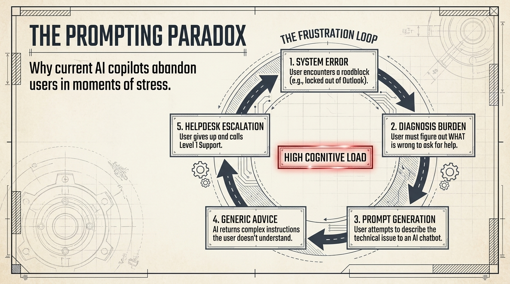
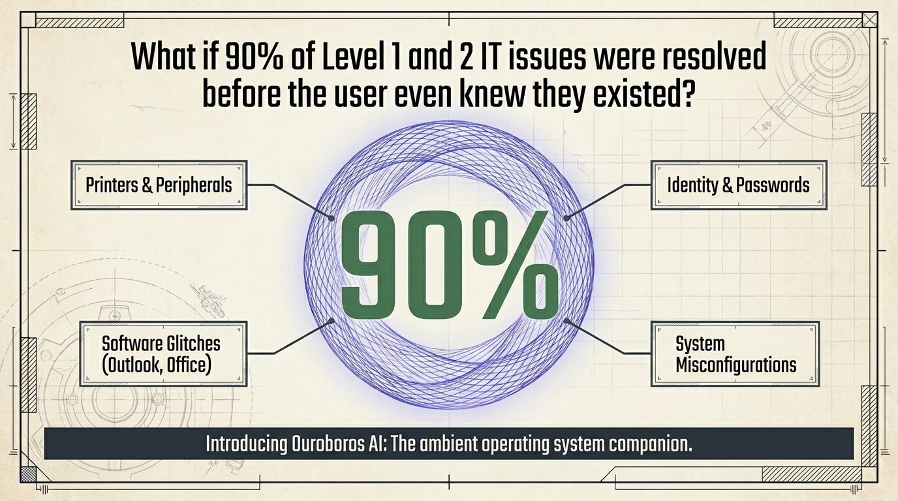
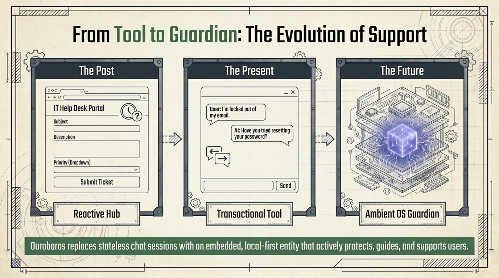

System error
The user encounters a roadblock such as being locked out of Outlook.
For businesses
Empowering your workforce with local-first autonomous AI. Ouroboros is the ambient operating system companion that protects users, endpoints, applications, and services before friction becomes a ticket.

A day in the life
A printer fault is not only a printer fault. It breaks focus, raises stress, and interrupts operational delivery.

The prompting paradox
The user must diagnose the problem, describe it, and ask the right question before help arrives.
The user encounters a roadblock such as being locked out of Outlook.
The user must figure out what is wrong to ask for help.
The user tries to describe the technical issue to an AI chatbot.
The AI returns complex instructions the user does not understand.
The user gives up and calls Level 1 support.

The 90% question
Ouroboros targets the recurring work that drains focus: printers and peripherals, identity and passwords, software glitches, and system misconfigurations.

Local hardware faults are detected and corrected before a ticket is generated.
Authentication loops and password friction are resolved at the local state layer.
Outlook, Office, and similar state corrections happen in the background.
Known patterns are mapped and corrected before they become interruptions.
From tool to guardian
Ouroboros replaces stateless chat sessions with an embedded, local-first entity that actively protects, guides, and supports users.
IT helpdesk portals create tickets after the user has already stopped working.
AI chat asks the user to explain the problem while they are stressed.
An ambient OS guardian resolves issues and guides the user at the moment of need.

Ouroboros AI
Start with the friction your employees already feel every week.